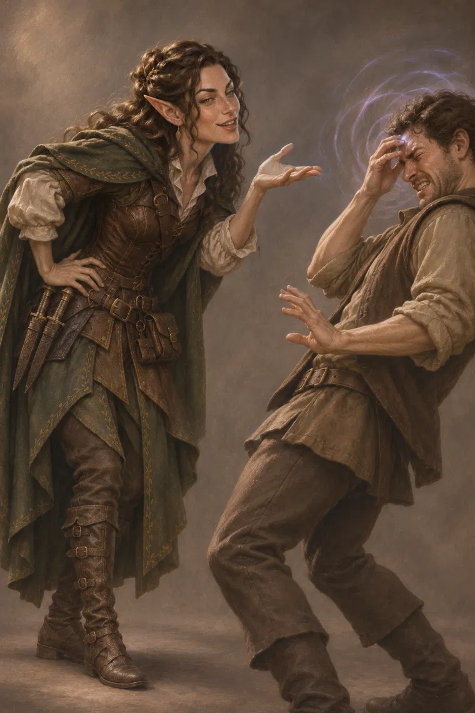
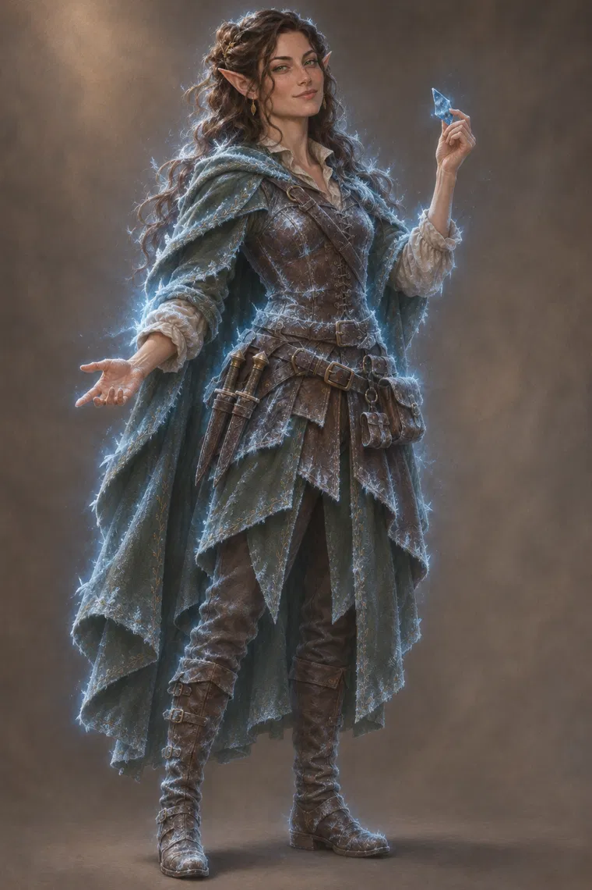
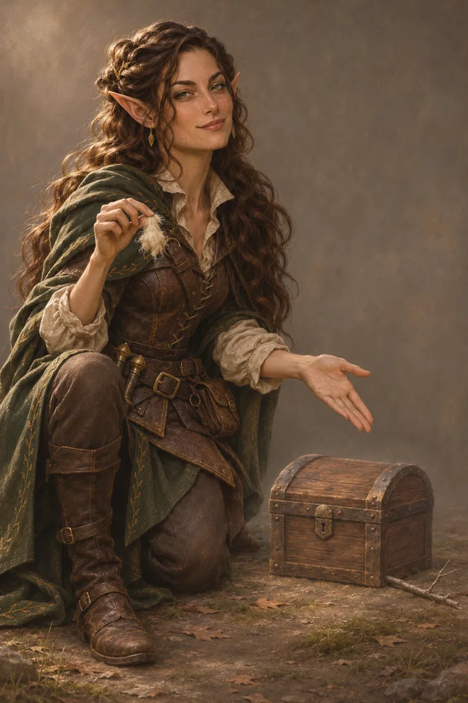

Zombaria Viciosa
Uma provocação encantada desestabiliza um alvo.

Uma provocação encantada desestabiliza um alvo.

Thalyta aponta e sussurra. Só a pessoa escolhida ouve e pode responder em segredo.

Uma parede ilusória ocupa parte de um caminho. A imagem é puramente visual.

Uma melodia ouvida na mente leva o alvo a recuar por uma passagem livre.

Uma palavra revigora uma pessoa que Thalyta vê à distância.

Um alvo larga o objeto que segura após receber uma ordem de uma palavra.

Um único feixe de energia crepitante, como no nível atual da personagem.

Uma perturbação psíquica momentânea atinge a mente de um alvo.

Geada mágica protetora envolve Thalyta e seu traje.

A atitude de uma pessoa muda de cautelosa para amistosa.

Truque inicial de linhagem
O truque inicial da linhagem limpa um pequeno lenço sujo.

Troca de linhagem planejada
Um baú pequeno e imóvel representa a opção visual da troca de truque planejada.
Ao investigar uma criatura, o grupo pode procurar sinais de alimentação, abrigo, água, horários, deslocamento e relações com outros habitantes. Essas perguntas podem abrir soluções de observação, diálogo ou passagem segura, conforme o que for realmente descoberto.
Uma hipótese tem alcance limitado. O que um personagem percebeu precisa ser comunicado aos demais. As cartas de campo registram as observações e descobertas do grupo.